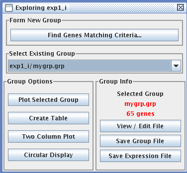
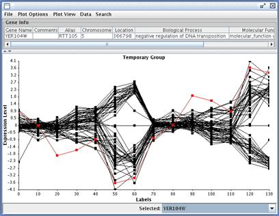

(10) Explore Data

Data exploration is a way to get familiar with your data, and find important functional relationships that may not be apparent from clustering. For example, you can find all genes that were upregulated after a certain time point, or all genes that increased their fold repression four times or greater at any time point. Once you have identified such genes, you can display them in a number of dynamic ways and save these images for publishing or teaching.
If you have not explored the current expression file before and saved group files, the only existing group is the entire expression file. You can create a temporary group by clicking "Find Genes Matching Criteria..." and filling out the form to find the genes and expression patterns you are interested in. If you want a group to be available the next time you explore your data, and the next time you open this project, you need to save the group file (which will automatically be given an extension of ".grp". A group file is just a text file that lists the names of the genes in the group. Any saved groups will then be listed under "Select Existing Group."A group of genes can also be saved as an expression file, which saves all columns of ratios or log-ratios along with the gene names.
Each of the displays on the left hand side of the Exploring window gives you a different visualization of your data. The "Plot Selected Group" display is shown here, with gene YER104W highlighted. Note that the annotations of this gene can be revealed above the plot of the group. This group was formed by finding all genes whose minimum value was less than -2. Interestingly, the group seems to consist of two distinct sub-groups: genes that are upregulated early and downregulated later, and genes that have the opposite profile.